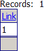
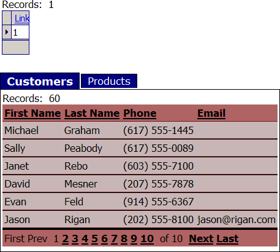
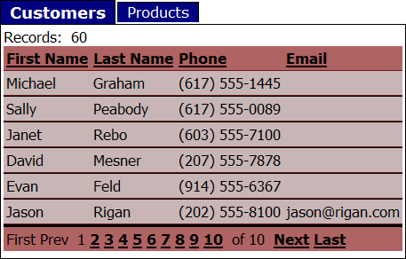

Placing Unrelated Grids in a Tabbed GridLinker
A tabbed gridlinker contains and displays a parent grid component and multiple child grid components. The presumption is that the table behind the parent grid is linked one-to-one or one-to-many to the tables behind the child grids.
However, it is possible to place multiple grids that have no relationship to each other into a tabbed gridlinker.
Create the Parent Grid
Create a new table named dummy with a single character field. Name the field "test".
Enter a single record into the table.
Create a tabular grid based on the dummy table.
Create a calculated field with the following expression: link = "1".
Place the "link" calculated field on the grid. The parent grid looks like this:

Create the Child Grids
The child grids may be based on any table and have individual formatting. This example created these two grids based on the AlphaSports sample database.
For each grid:
Create a calculated field with the following expression: link = "1".
Place the "link" calculated field on the grid.
Select the "link" calculated field in the Selected fields list and set the Column Properties > Hide column property to TRUE (checked).
Create the Tabbed gridlinker
Create a new tabbed gridlinker.
Click Add, select the parent grid, and click OK.
Add the child grids.
For each child grid:
Select the grid and click Link.
Select the parent grid in the Parent list.
Select the "link" field in the Linking Fields Parent Field list.
Select the "link" field in the Linking Fields Child Field list.
Click OK.
Set the Grid Properties > Tab button (selected) property to: <font face=Verdana size=4><b> Tab Title </b></font>.
Set the Grid Properties > Tab button (not selected) property to: <font face=Verdana size=3> Tab Title </font>.
Save the gridlinker.
Place the gridlinker on a page and publish it. The result should look something like this. Note the parent grid at top.

Reopen the gridlinker component
Select the parent grid.
Set the Grid Properties > Customize page layout property to TRUE (checked).
Select the Grid Properties > Page layout template property and click
 to display the Tabbed Grid Layout dialog. You will find code that looks like this at the top of the editor.
to display the Tabbed Grid Layout dialog. You will find code that looks like this at the top of the editor.
<table><!-- begin table for parent Grid --> <tr> <td>{ParentGrid_Echo_Part}</td> </tr> <tr> <td>{ParentGrid_UpdateErrors_Part}</td> </tr> <tr> <td>{ParentGrid_Search_Part}</td> </tr> <tr> <td>{ParentGrid_Grid_Part}</td> </tr> <tr> <td>{ParentGrid_DetailView_Part}</td> </tr> </table><!-- end table for parent Grid --> |
Delete all this code and click OK.
Save the gridlinker component and republish it. The result should look something like this.

If you look at the source of the A5W page that contains the modified gridlinker component, you will note that there is code both above and below the <body> tag. The code above the <body> tag loads the parent grid component and remains unchanged. However, it is not necessary to display the parent grid component. You just removed the code below the <body> tag that normally would display the grid component.
See Also